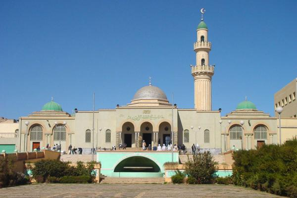
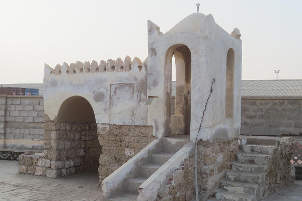
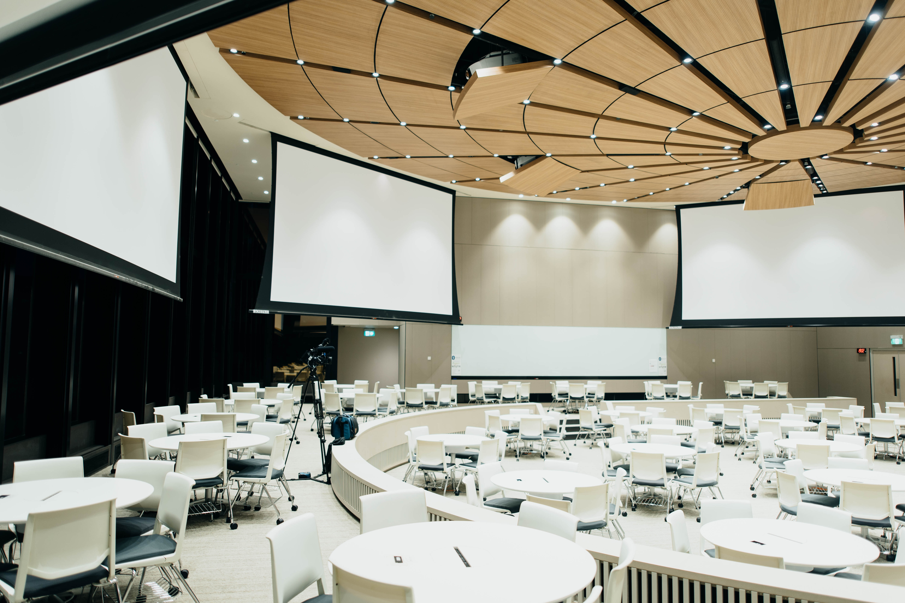
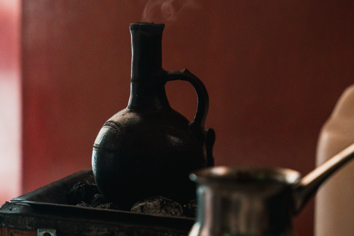
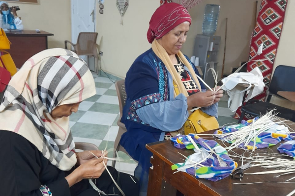
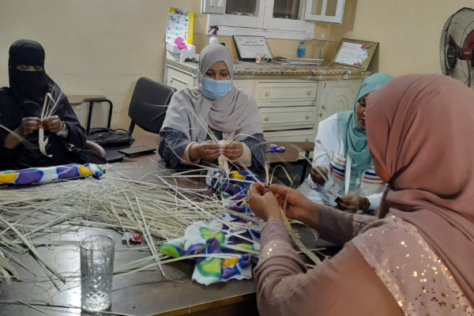
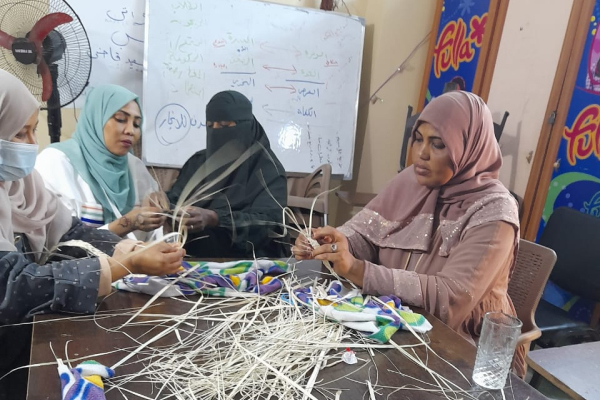
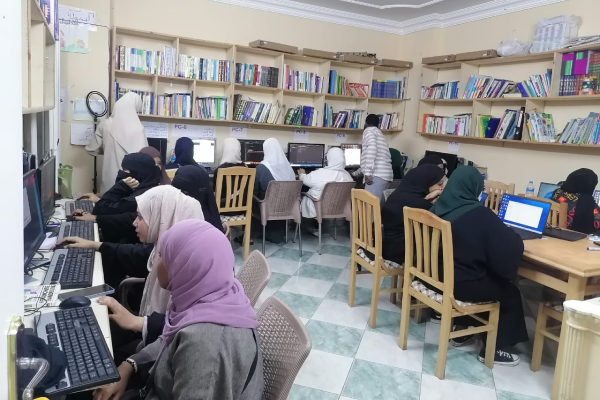

GAMEC Media
Welcome to the Media section of the Global Association of Muslim Eritrean Communities (GAMEC). Explore photos, videos, audio, and stories that capture our vibrant events, cultural heritage, and community spirit.
Photo Gallery
A collection of portraits, artwork, historical sites, and moments from community events and activities.




Awate Library – Sisters' Vocational & Computer Class (Cairo, Egypt)




Video Production
Lectures, Dawah content, event highlights, community stories, and more. GAMEC is producing original content including community interviews and educational series.
Content is currently in production — check back for updates.
Audio
Sermons, Islamic teachings, reflections, and community discussions.
Audio collection is in development.
Articles
In-depth reads on Islamic teachings, Eritrean heritage, community issues, and more – written by members and guests.
Articles section launching soon.
Social Media
Follow us for real-time updates, photos, stories, and community connection: